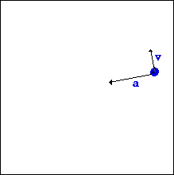

Centripetal Force

"I like work: it fascinates me. I can sit and look at it for
hours. I love to keep it by me:
the idea of getting rid of it nearly breaks my heart”
Jerome K. Jerome – Three Men in a Boat (1889)
- We have already seen that for uniform circular motion the magnitude of the acceleration is given by v2/r

With a directed
towards the center of the circle and v
tangential (perpendicular to a)
- The force acting on a body of mass m moving in uniform circular motion is given by
directed
towards
the center of the circle
- The net force acting towards the centre of a circle, keeping the object moving in circular motion, is known as the centripetal force,
e.g. Gravitational force keeps the
Earth in orbit around the Sun.
The tension in a string keeps a
rotating object from flying off
 Be
careful. The centripetal force is
NOT a force to be included on a free body
diagram. Rather, the net force
towards the center of the circle should be set equal to Fc (= mv2/r =
ma).
Be
careful. The centripetal force is
NOT a force to be included on a free body
diagram. Rather, the net force
towards the center of the circle should be set equal to Fc (= mv2/r =
ma).
- Combining your knowledge of frictional forces with centripetal force allows us to solve problems concerning the banking of curves applicable in highway design.


“ It’s true that hard work never killed anybody, but I figure
why take the chance ?”
Ronald Reagan – Interview The Guardian (1987)

Dr. C. L. Davis
Physics Department
University of
email: c.l.davis@louisville.edu